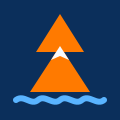

De la mer aux sommets
Cartes © IGN · SHOM — Météo : Météo-France, ECMWF via Open-Meteo
Aide à la navigation non certifiée : gardez les cartes officielles et la veille.
Heures et hauteurs au zéro des cartes, coefficients : prédictions officielles du SHOM pour le port choisi.
Faites glisser le doigt sur la courbe pour choisir l'heure : les flèches de la carte suivent. PM = pleine mer, BM = basse mer. Hauteur modélisée par rapport au niveau moyen (et non au zéro des cartes) : pour les hauteurs exactes, utilisez l'annuaire des marées SHOM.
Quand les modèles sont d'accord, la prévision est fiable. S'ils divergent, prudence.
Prévisions via Open-Meteo selon le modèle choisi (Météo-France AROME/ARPEGE, ECMWF, ICON, GFS) : vent, températures, pluie, neige et iso 0 °C. Pour le risque d'avalanche, consultez le bulletin de Météo-France (Menu).
Prévisions via Open-Meteo : vent et météo selon le modèle choisi (Météo-France AROME/ARPEGE, ECMWF, ICON, GFS), vagues, courant (Mercator, marée incluse) et hauteur d'eau modélisée. Maille de plusieurs km : recoupez avec les bulletins officiels et l'annuaire des marées SHOM.
L'alarme sonne et vibre si le bateau sort du cercle, et prévient si le GPS ne répond plus. Rayon conseillé : longueur de chaîne + longueur du bateau. Faites glisser l'icône d'ancre si elle est tombée plus loin. Dans l'APK, la surveillance continue écran éteint ; dans le navigateur, gardez l'écran allumé.
Touchez le profil pour situer le point sur la carte. Altitudes : IGN.
Gardez l'écran allumé pendant l'enregistrement : téléphone en veille, l'app ne reçoit plus le GPS.
Enregistre le fond choisi sur la zone affichée (zoom actuel à +3) pour l'utiliser sans réseau.
Carte des pentes : panneau Cartes ou bouton Pentes. Calques « Neige au sol », « Chute de neige » et « Iso 0 °C » dans le bouton Météo. Touchez la carte pour l'altitude, la pente et l'exposition d'un point.
Un seul fichier : réglages, repères, routes, traces, ancre. Gardez-le pour changer de téléphone.
Cartes : visualiseur public data.shom.fr. Ne remplace pas les cartes officielles à jour ni la veille visuelle.